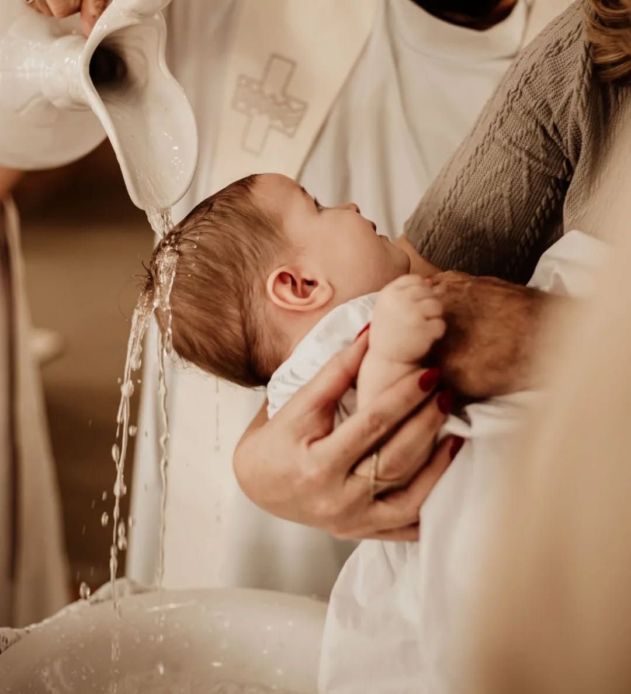

SACRAMENT OF INITIATION
A New Life
in Christ
Baptism if the first sacrament of initiation. It gives a person a new life as a son or daughter of God and welcomes them into the Church by washing away original sin. Baptism marks the beginning of a Christian's journey in faith and goodness with God.
It is through water and the word that we are welcomed into the Church and receive God's grace.

New life in Christ.
UNDERSTANDING BAPTISM
What happens in Baptism?
Purification
Through baptism, we become faithful children of God and members of the Church. Original sin is washed away and our souls are purified to begin a new life in Christ. This sacrament also gives us the spiritual strength and courage to grow in faith and live according to God's goodness and will.
Gateway
Baptism is important because it is what first unites and welcomes us Christians with God and the Church. It is also the gateway towards the other Holy Sacraments allowing us to grow closer in our faith and relationship with God.
New life
Baptism represents a Christian's spiritual rebirth, a new life in Christ, and their entrance to the Church. It acts as a reminder for believers to follow Jesus, choose what is good, and show compassion and understanding to others.
Signs and Symbols of Baptism. ݁₊᪥⋆. ݁
Baptism uses several important signs that help us understand its meaning.
Water — symbolizes cleansing and new life.
Baptismal Candle — represents the light of Christ.
White Garment — symbolizes the new life of the baptized person.
Oil — represents being strengthened and consecrated to God.
WHY IT MATTERS
Baptism and the Christian Life
Baptism is important because it is the sacrament that first unites us Christians with God and welcomes us to His family. It marks the beginning of our faithful life and relationship with Him. Notably, baptism is the gateway towards the other Holy Sacraments, allowing us to continue growing in faith and receiving God's grace throughout our journey with Him.
Baptism reminds us that we belong to God and are called to live according to the Gospel.